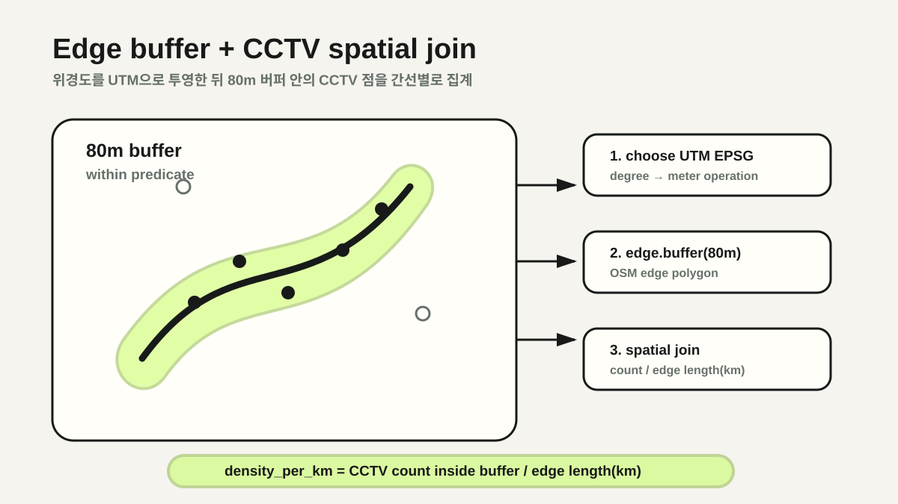

CCTV 선호 조건의 그래프 표현
일반적인 최단 경로는 각 도로 간선의 길이를 비용으로 사용합니다. 이 프로토타입은 CCTV가 많이 관측되는 길을 선호하도록 간선 비용을 바꿨습니다. 여기서 CCTV 밀도는 경로 선택을 위한 하나의 proxy이며 범죄 위험이나 보행 안전을 직접 측정한 값이 아닙니다.
전체 도시 그래프를 매 요청마다 내려받고 계산하는 것은 비용이 큽니다. 반대로 Tmap 경로만 그대로 반환하면 CCTV와 도로 특성을 반영한 대체 경로를 찾을 수 없습니다. 기준 경로를 탐색 범위의 힌트로 사용하고, 그 주변에서만 새로운 경로를 찾는 방식을 선택했습니다.
Tmap 경로 주변 400m 탐색 범위
먼저 Tmap 보행자 API에서 출발지와 목적지 사이의 기준 경로를 가져옵니다. 경로 좌표의 bounding box에 약 400m 여유를 더해 OSMnx 보행 그래프를 생성합니다.
Tmap pedestrian route
↓
route bounding box + 400m margin
↓
OSMnx walk network
↓
CCTV/model weighted shortest path기준 경로 주변으로 범위를 제한하면 출발지와 무관한 도시 전체 그래프를 만들지 않으면서도 우회 후보를 확보할 수 있습니다. polygon 기반 그래프 생성이 실패하면 경로 중심점과 반경을 이용한 조회로 fallback합니다.
400m는 계산량과 우회 후보를 절충하기 위해 사용한 휴리스틱입니다. 다른 지역·거리에서도 적절하다고 검증한 값은 아니며, 범위 밖에 더 나은 후보가 있어도 탐색하지 못합니다. fallback 역시 원래 corridor와 다른 그래프를 만들 수 있으므로 결과 동등성을 보장하지 않습니다.
미터 단위 버퍼와 CCTV 공간 조인
위도·경도 좌표에서 바로 80이라는 버퍼를 적용하면 80m가 아니라 80도가 됩니다. 그래프 중심 좌표로 UTM zone을 선택하고 OSM 간선과 CCTV 점을 같은 투영 좌표계로 변환한 뒤 미터 단위 연산을 수행했습니다.
- OSM 간선을 GeoDataFrame으로 변환하고 누락된 geometry 보완
- 그래프 중심점에 맞는 UTM EPSG 선택
- 각 간선을 80m buffer polygon으로 확장
- CCTV 점과 buffer를 spatial join
- 간선별 카메라 수 합산

단순 카메라 수는 긴 간선에 유리합니다. 이를 보정하기 위해 간선별 CCTV 수를 간선 길이(km)로 나눠 density_per_km를 계산했습니다.
다만 인접 간선의 80m 버퍼는 서로 겹칠 수 있어 같은 CCTV가 여러 간선 feature에 포함됩니다. 간선별 주변 환경을 평가하는 용도에서는 의도된 중복일 수 있지만, 경로 전체의 CCTV 수를 간선별 count의 합으로 계산하면 중복 집계가 됩니다. 경로 수준 지표에는 CCTV의 고유 ID를 기준으로 다시 deduplicate해야 합니다. 원천 데이터 자체의 중복·갱신 시점·누락 여부도 별도 검증 대상입니다.
5~95% 분위수 기반 밀도 정규화
도심의 특정 간선처럼 CCTV가 매우 많은 outlier가 있으면 min-max 정규화에서 대부분의 간선이 0 근처에 몰립니다. 5%와 95% 분위수를 하한·상한으로 사용하고 범위를 벗어난 값은 0과 1로 clipping했습니다.
low = quantile(density_per_km, 0.05)
high = quantile(density_per_km, 0.95)
normalized = clip(
(density_per_km - low) / (high - low),
0,
1
)일부 극단값이 전체 비용 함수를 지배하는 문제를 줄이고, 해당 탐색 그래프 안의 일반적인 간선 사이에서 CCTV 밀도 차이를 반영하기 위한 선택입니다.
이 정규화는 요청마다 만들어진 corridor의 분포를 기준으로 하므로 서로 다른 요청의 0.8을 같은 수준으로 비교할 수 없습니다. 모든 값이 같거나 표본이 너무 적어 high == low가 되면 분모가 0이 되므로 명시적인 기본값 처리가 필요합니다. 분위수 5%·95% 역시 검증된 안전 기준이 아니라 프로토타입의 휴리스틱입니다.
모델 점수가 높을수록 낮아지는 간선 비용
프로토타입에서 각 간선의 feature는 길이의 로그값, 정규화된 CCTV 밀도, km당 CCTV 수와 OSM 도로 유형 one-hot 값으로 구성했습니다. 가중치와 feature의 내적을 sigmoid에 통과시켜 0~1의 점수를 만들었습니다.
score = sigmoid(model_weights · edge_features)
runtime_cost =
edge_length / (1 + alpha × score)점수가 높을수록 비용은 작아지지만 길이가 0보다 크다면 비용도 항상 양수입니다. 따라서 NetworkX의 weighted shortest path는 점수가 높은 간선을 더 선호하되 음수 간선은 만들지 않습니다.
그러나 sigmoid 출력이라는 이유만으로 이 점수를 안전 확률로 해석할 수 없습니다. 학습 label의 정의, 데이터 분할, 평가 지표, calibration과 지역 외 일반화가 검증되지 않은 상태에서는 경로 순위를 바꾸는 휴리스틱 점수라고 설명해야 합니다.
alpha는 거리와 모델 점수 사이의 trade-off를 조절합니다. 값이 너무 크면 과도한 우회가 선택될 수 있어, 기준 경로 주변 400m 탐색 범위가 계산량 제한과 우회 범위 제한을 함께 담당합니다. 400m와 alpha 모두 사용자 연구로 검증된 정책값은 아닙니다. 더 명시적인 정책이 필요하다면 최대 추가 거리나 이동 시간 제약을 별도로 두는 방식이 적합합니다.
출발지와 도착지에 가장 가까운 OSM node를 찾고, weight_runtime을 기준으로 대체 경로를 계산합니다. 응답에는 Tmap 기준 경로와 재탐색 경로를 함께 반환해 클라이언트가 두 선택지를 표시할 수 있도록 했습니다.
물리적 거리와 최적화 비용의 분리
여기서 주의할 점은 기준 경로의 Haversine 거리와 재탐색 경로의 weight_runtime 합이 같은 단위가 아니라는 것입니다. 하나는 미터 단위 거리이고 다른 하나는 모델 점수로 할인된 최적화 비용입니다.
따라서 두 값을 그대로 놓고 “재탐색 경로가 몇 % 더 짧다”고 해석할 수 없습니다. 사용자에게 설명할 지표는 별도로 계산해야 합니다.
- 두 경로의 실제 거리와 예상 이동 시간
- 고유 ID로 중복 제거한 경로 주변 CCTV 수와 km당 밀도
- 모델이 사용한 휴리스틱 점수와 최적화 비용
- 기준 경로 대비 추가 거리와 CCTV proxy 변화
이 구현으로 확인한 것은 공간 데이터를 그래프 비용에 연결해 대체 경로를 계산할 수 있다는 점까지입니다. CCTV가 많다는 사실만으로 실제 안전이 높다고 말할 수 없으며, 데이터 품질과 모델 검증이 없는 상태에서 “안전 경로 추천”으로 일반화하지 않습니다.
가장 큰 배움은 서로 다른 의미의 값을 하나의 비용으로 변환할 때 계산 가능성과 유효성을 구분해야 한다는 점이었습니다. 이 글의 정확한 결론은 CCTV 가중 대체 경로 프로토타입을 구현했다는 것이며, 보행 안전을 검증했다는 것이 아닙니다.
NEXT POSTReact 서버 상태 동기화와 검색 상태 설계 회고 →